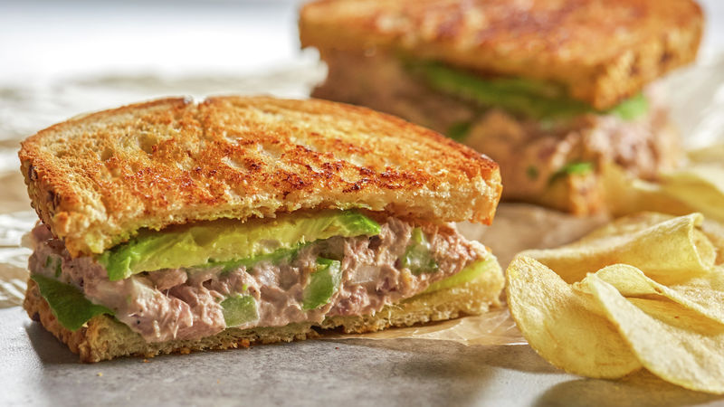

WEEKLY MEAL PLANNER |
| Days |
Breakfast |
Lunch |
Dinner |
| SUNDAY |
 |
Chicken Karage, rice, salad and milk |
|
German sausage, sandwich, chips and caramel frappe |
|
Chicken, bread with olive oil and balsamic vinegar and juice |
| MONDAY |
 |
Corn Flakes, bread and banana |
 |
Chicken Adobo, rice, juice and crackers |
|
Chicken Adobo, rice, mixed vegetables and cookies |
| TUESDAY |
 |
Champorado, crackers and milk |
|
Chicken Adobo, rice, pumpkin soup and bread with olive oil and balsamic vinegar |
 |
Mixed vegetables, fish, pumpkin soup and juice |
| WEDNESDAY |
|
Chicken sausage, salad, juice and bread |
|
Salad, herb chicken, rice, bread with olive oil and balsamic vinegar and chocolate milkshake |
 |
Chicken Afritada, French beans, mixed vegetables and juice |
| THURSDAY |
 |
Tuna sandwich, Chicken Afritada, rice and milk |
|
Beef and brocoli, fish and dragonfruit milkshake |
|
Beef and brocoli, mixed vegetables, juice |
| FRIDAY |
|
Beef tapa, egg, fried rice and milk |
|
Pizza Bread and banana milkshake |
 |
Chicken wings, nachos and juice |
| SATURDAY |
|
Salad, chicken tapa, rice, bread and juice |
|
Chicken lumpia, tuna sandwich, caramel frappe |
|
Chicken, rice and pizza bread |